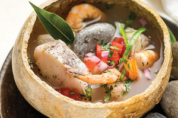
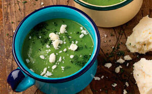
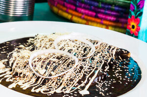
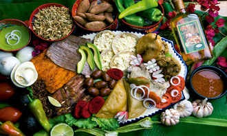

MENÚ
Caldo de piedra

Caldo de origen prehispánico que se prepara con agua, rebanadas de jitomate, chile verde, cebolla en rebanadas, ajos machacados y hierba santa. Todos los ingredientes se colocan en una jícara grande a la que se la agregan dos o tres piedras calientes al rojo vivo para hervir el agua. Lleva trozos de pescado y/o camarones de río.
Chile Atole

Como su nombre lo indica en estricto sentido es un atole con chile. Se prepara con granos de elote, chile de árbol, piloncillo, epazote, sal y agua.
Tlayuda

Es una tortilla de maíz de 30 cm de diámetro, aproximadamente. Se deja en el comal más tiempo del suficiente para que agarre una consistencia más firme y crujiente. Gracias a su modo de cocción, puede durar mucho tiempo. Principalmente llevan asiento, tasajo, cecina, chorizo y/o quesillo.
Mole negro

Algunos de sus ingredientes principales son chile chilhuacle negro, chihuacle rojo, mulato, pasilla oaxaqueño, tortilla quemada, cebolla, ajo, pan de yema, plátano macho, ajonjolí, cacahuates, nueces, nuez moscada, almendras, pepitas de calabaza, pasitas, jitomate, miltomate, canela, chocolate de metate y manteca de cerdo.
LO QUE NOS DISTINGUE
Es bien sabido que la base de nuestra cocina tradicional es el maíz,
el chile y los frijoles; sin embargo, en cada región de nuestro hermoso país se pueden encontrar diferentes ingredientes locales que se emplean desde tiempos ancestrales para enriquecer nuestras preparaciones,aportando un toque regional distintivo a los diferentes platillos que nos caracterizan y que llenan de vida y orgullo nuestros paladares.
